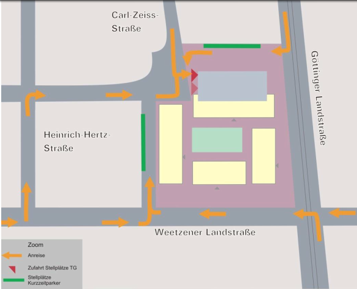

Der ADFC (Allgemeiner Deutscher Fahrrad Club) Hemmingen/Pattensen engagiert sich für gute Fahrradinfrastruktur und ein fahrradfreundliches Klima in Hemmingen und Pattensen. PDF-Broschüre
Sprecher Jens Spille, E-Mail: j.spille@adfc-hannover.de
ADFC Fahrrad-Selbsthilfewerkstatt-Hemmingen
in der Heinrich-Hertz-Straße 23 (Hinterhof), Hemmingen Die Fahrrad-Selbsthilfewerkstatt-Hemmingen ist bis auf Weiteres geschlossen. Über einen Notbetrieb für notwendig, dringende Reparaturen zur Unterstützung von Geflüchteten und Bedürftigen wird derzeit mit der Stadt Hemmingen beraten. Anfragen per Email
Hilfe bei Reparatur, Fahrradausgabe, Spendenannahme
Wir geben uns ja schon Mühe – aber nicht jedes Schätzchen ist dafür geeignet
✉ Fahrrad-Selbsthilfewerkstatt-Hemmingen@web.de
Sind Sie schon Mitglied? - hier können Sie sich anmelden
Lasten zu groß? Keine Ausrede Leihen Sie sich kostenlos ein Hannah Lastenrad unter https://www.hannah-lastenrad.de/. Hilfe, Fragen und Wünsche zur Hannah gibt unter hallo@hannah-lastenrad.de
Tragen Sie grundsätzlich einen Helm, wenn sie im Straßenverkehr fahren? Besser ist es. Eine Untersuchung der Deutschen Gesellschaft für Unfallchirurgie ergab 2017, dass es bei rund 25 Prozent aller Fahrradunfälle Kopfverletzungen gibt.
- Aktuelles
- Wer sind wir?
- Was wird
- Tipps und Nachrichten
- Mängelkarte für Hemmingen und Pattensen
- Was war
- Impressum
- Datenschutz
- Impressum
- Stand: 10.09.2020_21:05


Nach einer Studie der Bundesanstalt für Straßenwesen (BASt 2015) fahren bis zu 20 % der Rad fahrenden auf Radwegen entgegen der vorgesehenen Fahrtrichtung. Dieses sogenannte „Geisterradeln“, also das regelwidrige Linksfahren, gehört zu den Hauptursachen der Unfälle, die durch den Radverkehr selbst verursacht werden.
Das Fahrrad ist ein Fahrzeug – und Radfahrende sind Fahrzeugführende mit allen Rechten und Pflichten. Deshalb gelten zunächst die allgemeinen Regeln für den Fahrzeugverkehr. Auf diese Regeln geht der folgende Beitrag nur ein, wenn sie besondere Bedeutung für Radfahrende haben. Außerdem enthält die Straßenverkehrs-Ordnung (StVO) Vorschriften speziell für den Radverkehr. Um diese Vorschriften, ihre Beachtung und mögliche Konflikte soll es hier vor allem gehen.
Verkehrsrecht_fuer_Radfahrende als PDF
ARD hr-Fernsehen Sicherheit auf Radwegen - was bringen die neuen Regeln
Der ADFC fordert in einer Stellungnahme einen Radweg entlang des Südschnellweges. Ziel ist es bei Hochwasser von Ricklingen/Westerfeld nach Döhren zu kommen.
Der ADFC hatte zusammen mit der Stadt Hemmingen zu einem Workshop aufgerufen. Zum ersten Termin kamen 40 interessierte Bürger und zum zweiten Termin kamen auf Grund der nahenden Corona Krise die Hälfte. Die Bürger hatten auf vier großen Karten mit Stiften Ihre Wunschstecken eingetragen und 175 Moderatorenkarten beschrieben. Mit den schon vorhandenen Verbesserungsvorschlägen gibt es jetzt eine Liste mit über 239 Verbesserungsvorschlägen zu den Themen:
Alle Verbesserungsvorschläge haben wir auf folgender Mängelkarte zusammen gefasst. Siehe MaengelKarte.
Vollbildanzeige - Ein Service von Teamup Solutions AG in Zurich
Der ADFC Hemmingen/Pattensen engagiert für gute Fahrradinfrastruktur und ein fahrradfreundliches Klima. Erste Aktivitäten starteten 2013, seit Mai 2015 und mit mittlerweile rund 107 Mitgliedern (Stand Jan. 2019) und weiteren Ehrenamtlichen, engagiert sich der ADFC Hemmingen/Pattensen offiziell in den beiden Städten für
Diese vier zentralen Themenfelder werden in unser PDF-Broschüre kurz vorgestellt.

Spontane, kostenlose Feierabendradtouren werden bei entsprechenden Wetter (Sommer) in der Regel Mittwochs angeboten. Die ADFC Ortsgruppe hat dafür eine E-Mail Liste angelegt. Wir melden uns wenn es passt. Wer auf dieser Liste möchte, schreibe bitte an j.spille@adfc-hannover.de.
NEU: Tipps für Touren haben wir auf unsere Tourenkarte für Euch zusammen gestellt
Stadt Pattensen und das Wanderbare Calenberger Land
Stadt Hemmingen und das Radvehrkehrskonzept
GPSies bietet die Möglichkeit Touren zu planen und mit anderen auszutauschen. Auch als Apps erhältlich.
Tipp Radtouren: Ausgewählte Radtouren der Nachbar Ortsgruppen sind unter ADFC Region Hannover Termine zu finden.
Tipp Radfahrkarte: Eine Quellen offene Radfahrkarte mit Routingfunktion git es under OpenRouteService.org. Mit der rechten Maustaste kann man Start- und Zielpunkt setzen.
Ältere Tipps und Nachrichten gibt es unter Ältere Nachrichten
Gefährliche Querungen, Unfallschwerpunkte und Mängel auf Rad- und Fußwegen sammeln wir auf unserer Mängelkarte.
siehe Mängelkarte für Hemmingen und Pattensen

Beschwerden bitte direkt am Infrastrukturgesellschaft (Infra), Bürgersprechstunden: Mittwochs, 15 bis 17 Uhr im Büro Göttinger Landstraße 44 (neben Volksbank) in Hemmingen-Westerfeld melden.

| Tourenziel | Rethen, Bockemer Holz |
|---|---|
| Datum | 2020-09-02-Mi |
| Tourenrart | Feierabend |
| Tourenleiter | Günther |
| Start | Hemmingen Rathaus 17:00 |
| Dauer [Stunden] | ca. 3 |
| Teilnehmerzahl | 11 |
| Tourenlänge [km] | 32 |
| Wetter | heiter bis wolkig |
Die 2. Feierabend-Radtour startete am Mittwoch den 02. September mit 11 Radlern bei schönem Wetter. Durch die Leinemasch erreichten wir Rethen und fuhren auf einem idyllischen Radweg entlang der Bruchriede. Vorbei am Erbenholz ging es weiter zum Bockemer Holz mit seinen sehr schönen Waldwegen. Über den Kronsberg ging es zurück nach Laatzen und wieder in die Leinemasch. Nach einem kurzweiligen Stop im Laatzener Grasdachhaus fuhren wir weiter und erreichten nach ca. 3 Stunden flotter und schöner Fahrt und ca. 32 km Hemmingen.
| Tourenziel | Benthe, Velber und Ahlem |
|---|---|
| Datum | 2020-08-19-Mi |
| Tourenrart | Feierabend |
| Tourenleiter | Günther |
| Start | Hemmingen Rathaus 18:00 |
| Dauer [Stunden] | ca. 2 1/2 |
| Teilnehmerzahl | 9 |
| Tourenlänge [km] | 32 |
| Wetter | heiter bis wolkig |
Die 1. Feierabend-Radtour startete am Mittwoch den 19.August mit 9 Radlern bei gutem Wetter, und führte streckenweise über den Grünen Ring. Wir überquerten die neue B3 und fuhren durch Wettbergen nach Empelde. Mit einer leichten Steigung ging es zum Benther Berg. Von dort radelten wir weiter, direkt am Wald entlang, bis nach Velber und weiter zu der Gedenkstätte nach Ahlem. Danach erreichten wir den Mittellandkanal und fuhren weiter am Stichkanal entlang. An der Wasserkunst vorbei erreichten wir die Ihme und gelangten zu den Ricklinger Teichen. Nach ca. 2 1/2 Stunden und 32 km kamen wir gut gelaunt in Hemmingen an. Die Tour beendeten wir in einem Biergarten.
Nichts ist gesünder, als mit dem Rad zur Arbeit zu fahren. Mit dem Rad zur Arbeit: Das Risiko, an Herz-Kreislauf-Erkrankungen zu sterben, ist bei Radfahrenden um 24 Prozent geringer als bei Autofahrenden Quelle.
Das Stadtradeln 2020 fand trotzt der Corona-Pandemie in der Zeit vom 07.06. bis zum 27.06.2020 in der Region Hannover statt.
Die Gewinnenliste finden Sie unter https://www.stadtradeln.de/ergebnisse/?&cityfilter=Region%20Hannover&tab=winning#sr-ergebnisse-kommunen.
Der Weg ist das Ziel und führt idealerweise dorthin. Mal direkt, mal malerisch oder schnell und effizient oder auch mit Umwegen. Immer mit dem Rad, mal mit Anhänger dran oder mit den Kindern, ein anders Mal mit dem Grünschnitt oder dem Einkauf auf dem Lastenrad. Und auch mit dem Pedelec, weil es einfach geht oder schneller ist.
Was sind die Ziele der Hemminger Radelnden und über welchen (Rad)Weg wollen sie gerne dorthin gelangen? Das möchten der ADFC Hemmingen/Pattensen und die Stadt Hemmingen von den Hemminger Radelnden wissen. Darum sind Alle eingeladen zu einem
(Rad)Wege-Workshop am Mittwoch, 12. Februar, 18.30 Uhr in den Bürgersaal des Rathauses Hemmingen
Karten vom Stadtgebiet und Stifte für die Wege werden bereitgestellt. Jede und Jeder kann und soll ihre und seine wichtigsten Ziele und natürlich den Weg dahin eintragen. Den Weg zur Arbeit, zum Einkaufen, zur Schule oder nach weiter weg gilt es herausfinden. In anschließenden Gesprächen und Diskussionen können Abkürzungen, Problemstellen, Verbesserungshinweise besprochen und aufgeschrieben werden.
In einer weiteren Runde sollen auch die Wunschwege gefunden werden – „…wenn es eine Brücke gäbe…“ oder „…wenn man zwischen den Äckern oder Häusern durchfahren könnte…“. Das alles soll dazu beitragen, Vorschläge für notwendige und bessere Fahrradwege zusammenzustellen Der ADFC und die Stadt Hemmingen werden die Ergebnisse in einem zweiten Termin am 11. März zur gleichen Zeit am gleichen Ort verfeinern und versuchen Prioritäten für Hemmingen herauszuarbeiten. Daraus soll ein abgestimmter Aktionsplan für die planmäßige und schnelle Umsetzung werden. ADFC und Stadtverwaltung arbeiten zusammen in der AG Radverkehr, die vom Stadtrat einberufen wurde, um Hemmingen zu einer wirklich fahrradfreundlichen Stadt zu machen.
Straßenbauverwaltung: Sperrungen und Umleitungen erforderlich. Hier die Offizielle Pressemitteilung.
Zitat: “Anregungen der Stadt Hemmingen, möglichst viele Wegebeziehungen in der Bauzeit von Überführungsbauwerken und Bundesstraßentrasse dauerhaft mittels provisorischer Umfahrungen aufrechtzuerhalten, wurden durch die Straßenbauverwaltung geprüft und angesichts der bisherigen Erfahrungen im Verlauf der Deveser Straße als nicht praktikabel verworfen. Gegen die Einrichtung und Unterhaltung niveaugleicher Querungsmöglichkeiten für öffentliche Verkehre inmitten des Baufeldes sind in erster Linie Sicherheitsbedenken anzuführen.”

Die Pläne (eher gesagt Ideen) zur Umgestaltung der Weetzener Landstraße liegt auf der Homepage der Stadt Hemmingen. Umgestaltung der Weetzener Landstraße.

Die erste Fahrrad-Messstation im Umland ist am Dienstag, den 31.07.2018 durch den Regionspräsidenten Hauke Jagau und Bürgermeister Claus-Dieter Schacht-Gaida in Betrieb genommen worden. Weitere Messstationen sollen in Seelze, Sehnde und Burgwedel folgen.
Ziel: 2025 sollen 21 von 100 Wegen mit dem Rad gefahren werden.
Am 14.06.18 wurde die Analyse der verkehrlichen Auswirkungen vorgestellt.
Auf der Hemminger Homepage können Sie die Präsentation des Vorhabens einsehen.
Hier können Sie die verkehrliche Untersuchung einsehen. Die Erschließung wird von „hinten“ über die Carl-Zeiss-Straße erfolgen.

Die Einwendungen zum Planfeststellungsverfahren für den Neubau eines Radweges im Zuge der K 226/K221 von Ronnenberg nach Devese wurden am 2018-06-27-Mi erörtert. Der ADFC Hemmingen / Pattensen hat auf Mängel für die Einschleifung bei der Querungshilfe in Devese hingewiesen, der neue Entwurf berücksichtigt diese Mängel.
Der Entwurf des Verkehrsentwicklungsplanes 2030 der Stadt Hemmingen lag in der Zeit vom 07.12.2017 bis zum 31.03.2018 öffentlich aus. Er ist immer noch auf der Homepage der Stadt Hemmingen einsehbar Entwurf VEP2030.
Die Stadt Hemmingen wurde am Mittwoch den 2019-09-25 von der Arbeitsgemeinschaft Fahrradfreundlicher Kommunen Niedersachsen / Bremen e. V. (AGFK) als „Fahrradfreundliche Kommune Niedersachsen“ zertifiziert. Die Jury lobte besonders die ADFC—Fahrradwerkstatt in Hemmingen. Hier möchte der ADFC den Initiator und Begründer der Fahrrad-Selbsthilfewerkstatt, Dirk Härtel, ihren besonderen Dank aussprechen. Dank gilt auch Michael Maier der die Fahrrad-Selbsthilfewerkstatt vor der Jury hervorragend präsentiert hat sowie der Stadt Hemmingen, die die Räumlichkeiten kostenlos zur Verfügung stellt.
Bei der “straßenbegleitenden Infrastruktur” sieht die Jury aber noch Nachholbedarf. In diesem Zusammenhang verweisen wir hier auf unsere Mängelkarte für Hemmingen und Pattensen.
Die AGFK bietet den Kommunen ein Netzwerk, um sich gegenseitig auszutauschen und zu unterstützen.
Der Ausschusses für Stadtentwicklung und Umwelt hat am 15. Aug. 2019 beschlossen, dass zur Umsetzung des Radverkehrskonzeptes eine Arbeitsgemeinschaft (AG) Radverkehr gebildet wird, die mindestens einmal im Jahr tagt. Die Zusammensetzung soll sich an dem Teilnehmerkreis orientieren, der auch bei der Erarbeitung des Radverkehrskonzeptes beteiligt war. Feste Teilnehmer sind Vertreter von ADFC, ADAC, Polizei, Rat und Stadtverwaltung.
StVO Novelle. Das Bundesministerium für Verkehr und digitale Infrastruktur plant eine Stärkung des Radverkehrs.
Mindestüberholabstand für Kfz: Es wird ein Mindestüberholabstand von 1,5 m innerorts und von 2 m außerorts für das Überholen von zu Fuß Gehenden, Radfahrenden und Elektrokleinstfahrzeugführenden durch Kraftfahrzeuge festgeschrieben. Bisher schreibt die StVO lediglich einen „ausreichenden Seitenabstand“ vor. Schrittgeschwindigkeit für rechtsabbiegende Kraftfahrzeuge über 3,5 t
Für rechtsabbiegende Kraftfahrzeuge über 3,5 t soll aus Gründen der Verkehrssicherheit innerorts Schrittgeschwindigkeit (7 bis 11 km/h) vorgeschrieben werden. Verstöße können künftig mit einem Bußgeld in Höhe von 70 Euro sanktioniert werden. Zudem wird ein Punkt im Fahreignungsregister eingetragen. Grünpfeil ausschließlich für Radfahrer
Mit der StVO-Novelle wird die bestehende Grünpfeilregelung auch auf Radfahrer ausgedehnt, die aus einem Radfahrstreifen oder baulich angelegten Radweg heraus rechts abbiegen wollen. Außerdem wird ein gesonderter Grünpfeil, der allein für Radfahrer gilt, eingeführt.
Generelles Haltverbot auf Schutzstreifen: Schutzstreifen für den Radverkehr trennen den Rad- und den Autoverkehr mit einer gestrichelten weißen Linie (Zeichen 295 der StVO). Autos dürfen dort zwar nicht parken, aber bislang noch bis zu drei Minuten halten. Dies führt vielfach dazu, dass die Radfahrenden Schutzstreifen nicht durchgängig nutzen können, weil ihnen haltende Autos den Weg versperren. Deshalb wollen wir dort ein generelles Haltverbot einführen. Einrichtung von Fahrradzonen
Analog zu den Tempo 30-Zonen sollen in Zukunft auch Fahrradzonen angeordnet werden können. Die Regelung soll sich an den Regeln für Fahrradstraßen orientieren: Für den Fahrverkehr gilt eine Höchstgeschwindigkeit von 30 km/h. Der Radverkehr darf weder gefährdet noch behindert werden. Auch Elektrokleinstfahrzeuge sollen hier künftig fahren dürfen.
Klarstellung zum Nebeneinanderfahren von Radfahrenden: Das Nebeneinanderfahren von Radfahrenden ist ausdrücklich erlaubt, wenn der Verkehr dadurch nicht behindert wird. Die bisherige Formulierung in der StVO stellt das Hintereinanderfahren in den Vordergrund und kann daher missverstanden werden.
Ausweitung des Parkverbots vor Kreuzungen und Einmündungsbereichen: Das Parken vor Kreuzungen und Einmündungen soll in einem Abstand von bis zu je 8 m von den Schnittpunkten der Fahrbahnkanten oder bis zu je 5 m vom Beginn der Eckausrundung verboten werden, wenn ein straßenbegleitenderbaulicher Radweg vorhanden ist, der als benutzungspflichtig oder mit Radsinnbildgekennzeichnet ist. Hierdurch soll die Sicht zwischen Straße und Radweg verbessert und dadurch die Sicherheit von Radfahrenden erhöht werden.
Vereinfachung für Lastenfahrräder: Um speziell für Lastenfahrräder Parkflächen und Ladezonen vorhalten zu können, führen wir ein spezielles Sinnbild „Lastenfahrrad“ ein, das die zuständigen Straßenverkehrsbehörden nutzen können.
Verkehrszeichen Radschnellwege: Das Verkehrszeichen „Radschnellweg“ soll in die StVO aufgenommen werden, um die Kennzeichnung von Radschnellwegen auch unabhängig von der Fahrbahnbeschaffenheit wie z. B. auf sandigem Untergrund möglich zu machen.
Überholverbot von Radfahrenden: Mit der Einführung eines neuen Verkehrszeichens sollen die zuständigen Straßenverkehrsbehörden in Zukunft ein Überholverbot von einspurigen Fahrzeugen (u. a. Fahrrädern) für mehrspurige Kraftfahrzeuge z. B. an Engstellen anordnen können.

Erweiterung der Erprobungsklausel: Die bestehende Klausel für zeitlich und örtlich begrenzte Anordnungen zur Erprobung verkehrsregelnder oder sichernder Maßnahmen soll künftig unabhängig von einer Gefahrenlage Modellversuche ermöglichen, um den Handlungsspielraum der zuständigen Straßenverkehrsbehörden zu erweitern. Solche Modellversuche sollen im Einvernehmen mit den Kommunen angeordnet werden. Damit wird auch die Mitbestimmung der Kommunen gestärkt. Eine weitergehende Öffnung des Straßenverkehrsrechts für Verkehrsversuche bedarf einer Änderung auf Gesetzesebene, die in einem weiteren Schritt im nächsten Jahr angegangen werden soll.
Vermehrte Öffnung von Einbahnstraßen für Radfahrende in Gegenrichtung: Durch die Änderung der Allgemeinen Verwaltungsvorschrift zur StVO sollen die zuständigen Straßenverkehrsbehörden verstärkt zur Prüfung der Öffnungsmöglichkeit von Einbahnstraßen in Gegenrichtung für Radfahrende veranlasst und die Zahl der in Gegenrichtung freigegebenen Einbahnstraßen dadurch vergrößert werden.
Mehr Radverkehr ist die Lösung bei Stau, dicker Luft und Fahrverboten. Steigen mehr Menschen auf das Fahrrad um, ist das gut für alle. Wie das gelingt, zeigt der Allgemeine Deutsche Fahrrad-Club zu seinem 40-jährigen Bestehen mit einer großen, bundesweiten Kampagne. Das Ziel: Mehr Platz fürs Rad - für gute, breite Radwege, sichere Kreuzungen und viel mehr Fahrradparkplätze. Mit Aktionen vor Ort macht der Fahrradclub auf die Platzdebatte im Straßenraum aufmerksam und zeigt, wie dieser Platz fürs Fahrrad, für gute Radwege und für bessere Radfahrbedingungen genutzt werden kann. Weitere Informationen auf mehrplatzfuersrad.de. Hashtag: #MehrPlatzFürsRad.
Die Stadt Hemmingen hat einen 80-seitgen Entwurf zum “Teilräumliches ISEK - Voruntersuchung Arnum Mitte” im Internet bereit gestellt Drucksache 341/2019.
Hier eine von vielen Umbaumaßnahmen die angedacht sind.

Der Entwurf wird vom Do. 14.02 bis Mo. 18.03 im Rathaus Hemmingen ausliegen. Eine öffentliche Informationsveranstaltung ist am Mo. 18.02 ab 19:00 in der Wäldchenschule replant.
Die ADFC Mitglieder haben auf Ihren 23. RadelTreff in diesem Zusammenhang auch über einen Shared Space (deutsch: „gemeinsamer Raum“) diskutiert. Charakteristisch ist dabei die Idee, auf Verkehrszeichen, Signalanlagen und Fahrbahnmarkierungen zu verzichten. Gleichzeitig sollen die Verkehrsteilnehmer vollständig gleichberechtigt werden, wobei die Vorfahrtsregel weiterhin Gültigkeit besitzt. Im Gegensatz zur konventionellen Verkehrsberuhigung soll auch eine Anwendung in Hauptverkehrsstraßen möglich sein. (Wikipedia)
Beispiel: Shared-Space Kreisel in Bohmte (NdS).
Mehr aus der Vergangenheit
Die ADFC Geschäftsstelle:
ADFC Allgemeiner Deutscher Fahrrad-Club / Region Hannover e.V.
Geschäftsstelle
Hausmannstr. 9-10
30159 Hannover
Tel.: (0511) 16403-12
Das Sprecherteam wurde auf der Mitgliederversammlung 2020 am 29. Januar 2020 für zwei Jahre gewählt.
| Aufgabe | Name |
|---|---|
| Sprecher | Jens Spille |
| Vertreter | Günther Kleinod |
| Vertreter | Michael Maier |
| Vertreter | Joachim Amtsfeld |
Mitglied werden kann man hier
IBAN: DE97 2509 0500 0000 9205 50,
BIC: GENODEF1S09 (Sparda Bank Hannover e.G.)
Verwendungszweck: “ADFC Selbsthilfewerkstatt Hemmingen” und Anschrift (für eine Spendenbescheinigung)
Mit fahrradfreundlichen Grüßen, die ADFC Ortsgruppe Hemmingen/Pattensen.


 Direkter Link
Direkter Link